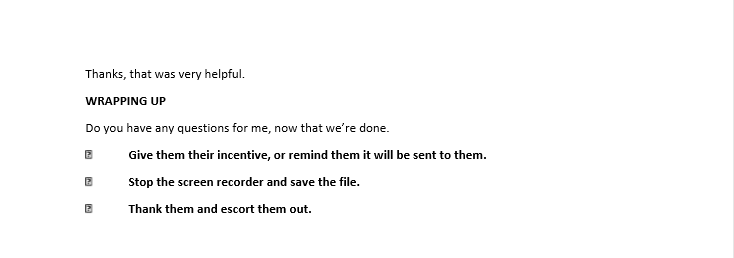

21st Century Technology: Designing for Mobile Screens
Krug’s, Don’t Make Me Think, discusses mobile websites as the method of obtaining information for the 21st century tech user. Demonstrating excitement about the possibility of usability for mobile devices, the considerations to make as developers take web page content to place on the small screen and the best way to get it right for mobile usability.
Developers are designing for the small screen first. When designing for the small screen developers have to choose the information that users need to review when buildng mobile websites for a quality mobile experience. This process includes assessing tradeoffs from the large screen to the small screen.
Krug provides four considerations for quality user experience. “One way to deal with a smaller living space is to leave things out by creating a mobile site that is a subset of the full site”. This consideration challenges developer to identify critical information for effective usability. “Design with mobile first” website users are using their mobile devices to obtain information. Designing for the small screen first reduces the amount of time it takes to review and decide what information is compatible with the full site for information to transfer to the small screen.
“Add content in additional levels of tapping” websites have tertiary layers of tappable information with the most critical information the first two layers, which bring me to the final consideration “managing real estate shouldn’t be done at the cost of usability. If a developer has to add information to layers place the information users want as close to the homepage as possible. Give the user what she wants.
The following data is a mobile usability test for
The Meat and Bread Mobile usability test was conducted with usability tools from Usability.gov, scripts from Steve Krug’s Rocket Surgery Made Easy, The Do it Yourself Guide to finding and fixing Usability Problems."
Meat and Bread Homepage on a Mobile DeviceScope: This usability test is for the website Meat and Bread.com. The scope includes testing the website navigation, content and communication with website creators using a mobile device.
Purpose: Effective business websites allow users to easily purchase products, have shareable information about their product or service to attract new customers, and provide customers with an opportunity to discuss areas of concerns to increase customer satisfaction on a mobile device. As a result, the purpose of the mobile usability test is to see if users can easily find a local restaurant, find the menu, the company Instagram page and complete a contact form.
Schedule & Location: The usability test schedule and location varied based on tester availability. The test was conducted in a quiet location of tester choice. The sessions are scheduled to take place in the evening hours.
Sessions: The sessions are scheduled for 30 min. The session includes an introduction to usability testing, distribution of release forms, distribution of written tasks, and wrap up. Answering any post questions from the mobile usability testers.
Equipment: The equipment for the test includes a laptop, mobile smartphone to record the session, mobile smartphone to cnduct the test and audio recorder.
Participants: The three participants for the Meat and Bread usability test were recruited by the moderator by face to face request with no incentive offered.
Scenarios:
- Indicate the number and types of tasks included in testing. The usability test includes four tasks.
- Find the South Lake Union restaurant address
- Pick a sandwich you would order.
- Fill out the contact form, but do not submit.
- Open the company Instagram page
Mobile Test Metrics
Identifying Test Metrics
-
Data was collected for several metrics during the course of testing.
- Successful Task Completion: Each scenario requires the participant to obtain specific data that would be used in a typical task. The scenario is successfully completed when the participant indicates they have found the answer or completed the task goal. In some cases, you may want give participants multiple-choice questions. Remember to include the questions and answers in the test plan and provide them to note-takers and observers.
- Critical Errors: Critical errors are deviations at completion from the targets of the scenario. For example, reporting the wrong data value due to the participant’s workflow. Essentially the participant will not be able to finish the task. Participant may or may not be aware that the task goal is incorrect or incomplete.
- Non-Critical Errors: Non-critical errors are errors that are recovered by the participant and do not result in the participant’s ability to successfully complete the task. These errors result in the task being completed less efficiently. For example, exploratory behaviors such as opening the wrong navigation menu item or using a control incorrectly are non-critical errors.
- Error-Free Rate: Error-free rate is the percentage of test participants who complete the task without any errors (critical or non-critical errors).
- Time On Task How much time did each tester take to complete the assigned task.
- Likes, Dislikes and Improvements: Participants were asked what they liked most about the site, what they liked least about the site, and recommendations for improving the site.
Mobile Tester 1
Data Chart for Mobile Tester 1 Data Chart for Mobile Tester 1
Data Chart for Mobile Tester 1
Mobile Tester 2
Data Chart for Mobile Tester 2Mobile Tester 3
 Data Chart for Mobile Tester 3
Data Chart for Mobile Tester 3
Test Results and Recommendations
 Compiled data for Mobile Usability Test
Compiled data for Mobile Usability Test
Interesting observations from the mobile test are all four tasks for the usability test were all able to be completed on the home page simply by scrolling. The testers opted to use the navigation menus to complete the tasks instead of scrolling through the home page to complete tasks for the usability test. Two of the user took note of the information on the home screen, the locations, the icons, images and scrolled to the bottom of the home screen.
The general consensus from all three mobile testers is Meat and Cheese is a good website. When first opening the page testers knew the site was for sandwiches, a sandwich company or sandwich restaurant.
The mobile testers recommended improvements to the contact form fields. As tester 2 completed the contact from on his mobile device the auto form fields didn’t appear in the text box. Tester 3 intentionally didn’t complete the form to see if she could submit the form with missing information. The website didn’t let her submit the forms without the information in the required fields. Tester three also noted, the text that appears when you try and submit the contact form without the required in formation as an area of improvement.
Script for Usability Test
This script is an adaptation of the original script from Steve Krugs Rocket Surgery Made Easy: The Do-It-Yourself Guide to Finding and Fixing Usability Problems
 Moderator Script for Mobile Usability Test